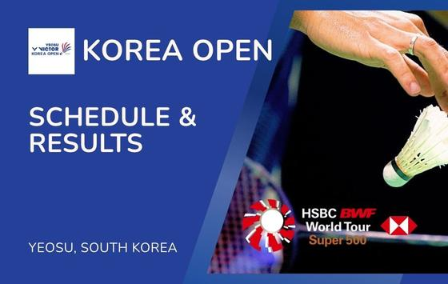
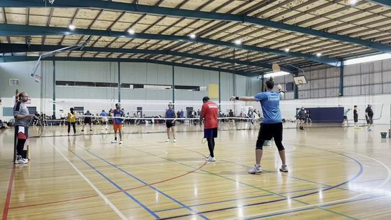

Executive Synthesis: Company results, agent safeguards and task-shift evaluations lead today’s edition, alongside consequential election decisions, international conflict and fresh Bay Area civic news.
Sports
Formula 1’s Mexico City race produced a championship milestone and a revised result after a penalty. India’s ODI selections and current racquet tournaments round out the sports coverage.
Badminton and tennis
| Tennis Actu: | today · 3m |
Paris Masters day one ends with Djokovic advancing and a Monfils tribute
—
Tennis Actu’s November 3 update recaps the opening day in Paris, including Novak Djokovic’s win over Valentin Vacherot and a tribute to Gaël Monfils, who has announced this is his final season. The page also reports results from the day’s other matches. It is a first-day recap rather than a new draw preview; the official tournament schedule remains the source for upcoming match times.
Takeaway: This is a fresh result and player-career update from the Paris Masters.
| Badminton World Tour: | today · 3m |

Korea Open day two features H.S. Prannoy and An Se-young — The Korea Open daily schedule shows Wednesday, November 4 matches including H.S. Prannoy against Yoo Tae-bin at 1:20 p.m. local time and An Se-young later in the order of play. The page also reports Tuesday results. Match times on the order of play can move as earlier matches run long, so use the tournament page for the latest court schedule.
Takeaway: This is a current badminton schedule featuring an Indian player and a leading women’s singles player you follow.
F1, cricket and football
| Formula 1: | 2 days ago · 4m |
Antonelli clinches his first F1 title as Verstappen wins in Mexico City
—
Kimi Antonelli became Formula 1’s youngest world champion after finishing third in the Mexico City Grand Prix, enough to secure the 2026 title. Max Verstappen won from fifth on the grid, with Lewis Hamilton second. The 71-lap race included a red flag after Valtteri Bottas’s crash and a late safety car after Arvid Lindblad’s crash. The paddock moves to São Paulo for the November 6–8 Grand Prix.
Takeaway: For your F1 interest, this settles the championship while setting up the next race weekend immediately.
| Formula 1: | yesterday · 3m |
Piastri’s Mexico City result is revised from seventh to 15th after penalty
—
Oscar Piastri received a 10-second penalty for causing a collision with Arvid Lindblad at Turn 1 and was reclassified from P7 to P15. The stewards said Piastri was not fully alongside Lindblad and that the collision could have been avoided by moving farther left after Turn 1. Gabriel Bortoleto moved into the points as a result; Piastri leaves the round with zero points.
Takeaway: This is a material standings update for your F1-following interest after the Mexico race.
| ICC: | today · 4m |
Gill says India will keep a flexible middle order for the New Zealand ODIs
—
On the eve of the first ODI in Auckland, captain Shubman Gill said India will use a flexible approach at No. 5 and No. 6, with Axar Patel or KL Rahul able to move depending on matchups. Gill described the five-match New Zealand series as a chance to test young players in conditions he sees as comparable to South Africa ahead of the 2027 World Cup. The opener is scheduled for November 4.
Takeaway: For your cricket interest, this outlines the selection approach India plans to test in the opening match.
| ICC: | 4 days ago · 3m |
India will start the New Zealand ODI series without Prasidh Krishna
—
The ICC reported that Prasidh Krishna was ruled out of India’s five-match ODI series after he did not receive fitness clearance while recovering from a hamstring injury. Nitish Kumar Reddy remains with the squad for the first ODI on November 4, then is due to join India A. Mohammed Siraj is also expected to join India A for its second four-day game before the Test series begins November 19.
Takeaway: This provides lineup context for the India–New Zealand series you follow.
Play and train: badminton
| Western Badminton: | Oct 22 · 5m |

A rally-by-rally guide to making three decisions in doubles — This coaching guide organizes a doubles rally around three decisions rather than a fixed sequence of shots. It is a practical framework for reading the shuttle and opponents, choosing a response, and preparing for the next contact. The page is older than the standard news window but remains useful as an evergreen technique resource.
Takeaway: The guide offers a simple tactical lens for the doubles badminton you play.
| Frank Badminton: | Aug 9 · 10m |
Takeaway: This is a practical doubles communication resource for your badminton play.